Two months in one paper: an epoch ends at BioWare, DeepSeek undercuts the frontier by 15x, Godot goes to beta, and WoW gets a time machine. Forty-one sections, eight quick hits, zero filler.
The studio that made Mass Effect, Dragon Age and Knights of the Old Republic is gone, 400 people are out, and the next Mass Effect is cancelled.
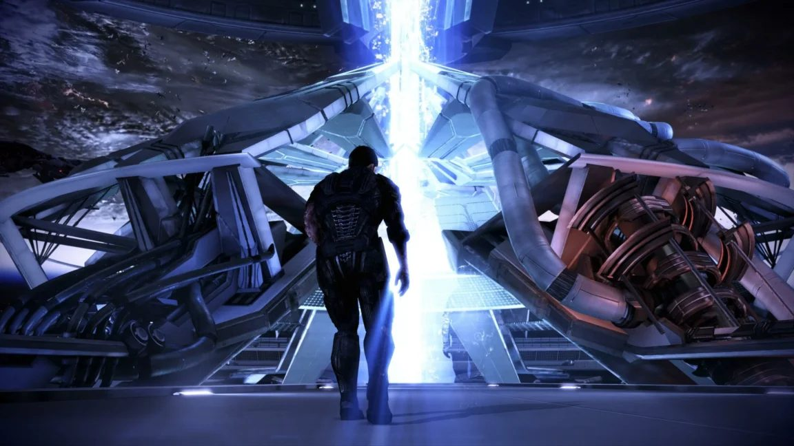
Ars Technica / BioWare
Electronic Arts has shut down BioWare. Ars Technica puts the number at 400 layoffs and confirms the next Mass Effect project is cancelled outright. BioWare was founded in 1995; that is 31 years of role-playing history ending in a restructuring memo.
Variety adds the wider frame: this is EA's first major move since going private this summer, cutting roughly 3% of the workforce across the studio business, and Respawn and DICE are now teaming up on a new Star Wars: Battlefront 3. BioWare is the cost that pays for it.
Angry Joe dedicated a full rant to the closure two videos back, and his history lesson lands: EA absorbed BioWare in 2007 after a private-equity deal, handed it projects it never made, and by his reading any studio that misses three times gets closed. In the weekly roundup he put it plainly - the BioWare he grew up with died years ago, and this is just the paperwork.
Charlie called it simply Goodbye BioWare and drew over two million views, and Asmongold ran two separate videos on the fallout, calling the situation a meltdown and then simply really something. Nobody who grew up on these games is taking it quietly.
Why it matters One of the most decorated RPG studios in the industry is closed, and the Mass Effect franchise is now in limbo.
Somewhere a Mass Effect 2 recruitment ad is still promising a crew that EA has now made fiction.
Staff describe a publisher whose cost-cutting has been grinding on long before this month's closures.
Nintendo Life spoke to EA employees after the latest round of layoffs, and the picture is grim: morale has been terrible, with staff criticising the publisher's cost-cutting well before BioWare's closure made headlines.
Combined with the 400 layoffs and the cancelled Mass Effect, it reads like one continuous squeeze rather than one bad week. This is what the Rockstar union ballot two sections down looks like from the inside of a studio that did not have one.
Why it matters The human cost behind the closure numbers, in the workers' own words.
Deep unrest at the French studio behind Vampyr and Banishers as it scrambles to restructure against the wall.
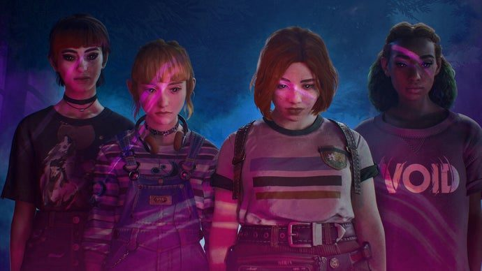
Eurogamer
Don't Nod - the studio behind Life is Strange, Remember Me, Vampyr, Banishers: New Eden and this year's Aphelion - is in serious trouble. Eurogamer reports deep unrest inside the company as it tries to restructure and guard against insolvency, with staff voicing that the company has been driven into a wall for years.
Another week, another reminder that a beloved catalogue does not pay the bills. The studio's games have a devoted audience; the business behind them apparently did not.
Why it matters The steady unraveling of mid-size single-player studios is now claiming studios with genuine hits.
Auroch Digital scored 96 percent on Steam with its demo, and still needs cutbacks.
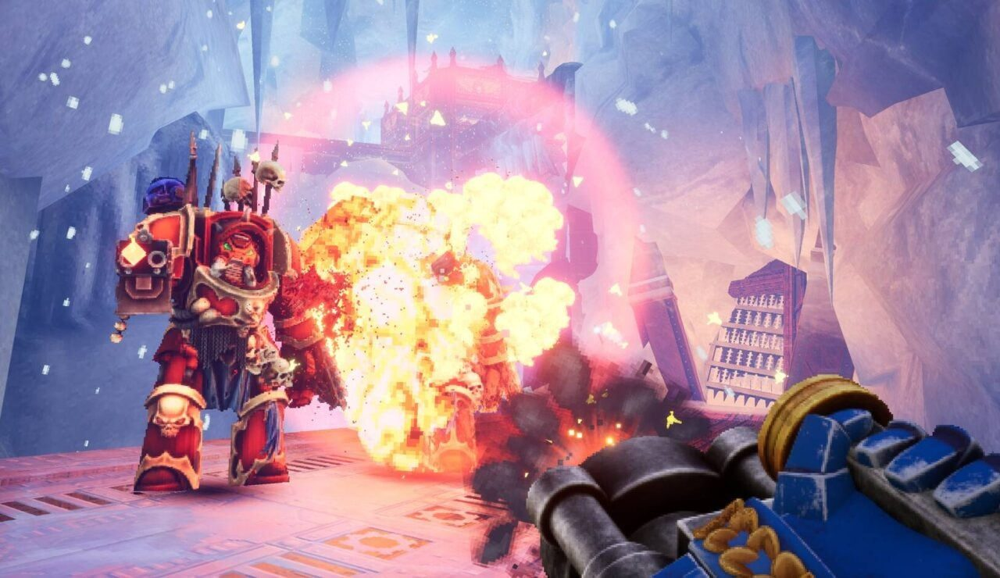
Kotaku / Auroch Digital
Auroch Digital posted a layoff announcement, deleted it, and then reposted it two weeks later - after Warhammer 40,000: Boltgun 2's demo had just scored a 96 percent rating on Steam.
That is the whole industry in one story: the review score did not save the jobs, and the first instinct was to say nothing. Kotaku's write-up is worth a read precisely because the sequencing is the news.
Why it matters Even a near-perfectly-received demo cannot head off layoffs - the score economy does not work the way players assume.
The ballot could create the largest recognised games union in UK history, timed right beside the biggest launch of the decade.
Rockstar Games employees in the UK will vote on recognising the IWGB Rockstar Game Workers Union - a ballot that lands around Grand Theft Auto 6's release window. If it passes it becomes the largest recognised union in UK games history.
Game Developer notes the two-week decision window; either way, November is when the biggest studio in the industry answers the question in public.
Why it matters If the largest studio in the industry recognises a union during its biggest launch, the rest of the UK sector has a template.
Forsaken arrives with haunted technology, an iOS port, and the pre-launch tease Hello Games only just cashed in.
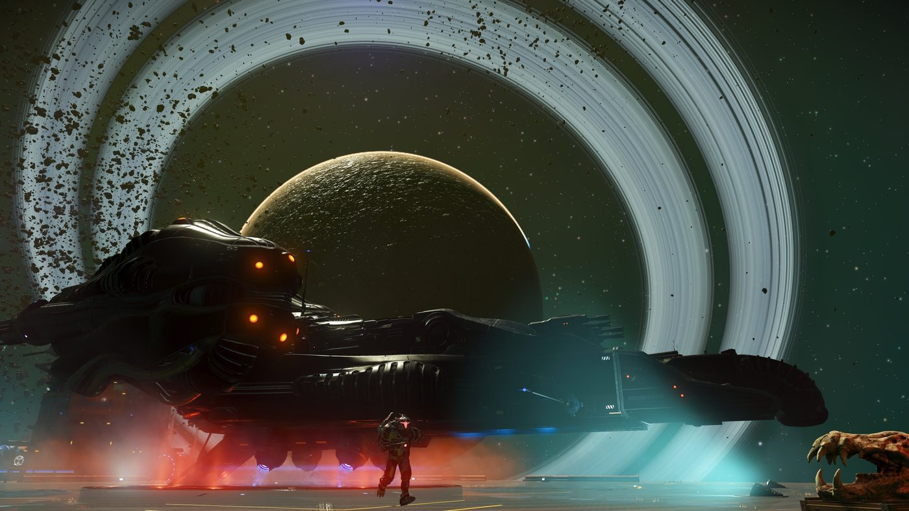
IGN / Hello Games
Hello Games has shipped No Man's Sky: Forsaken, its fifth major update of 2026. The headline feature is the one fans were promised before launch all those years ago: you can now fly directly to neighbouring stars, no loading-screen galaxy map in between.
The update also leans spooky for the season - a search for rare haunted technology - and lands on iOS the same day. IGN, PCGamesN, GamesRadar and Xbox Wire all covered it; for a game he actively plays, that is a lot of new toys in one patch.
No story spoilers here, just the patch name and what it adds mechanically.
Why it matters The game on his actively-played list with the most relentless update cadence just added its most-requested travel feature.
Pearl Abyss drops its first expansion across PC and consoles tomorrow, with a staggered global rollout.
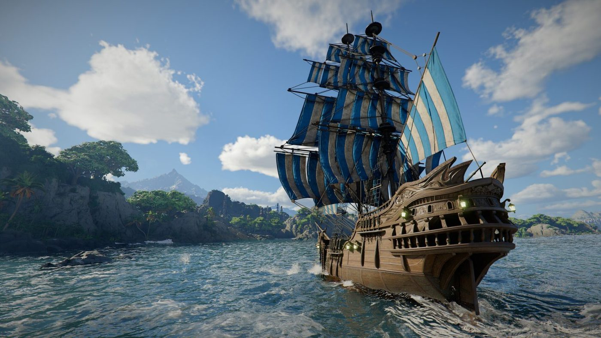
Wccftech / Pearl Abyss
Charting the Unknown, the first DLC expansion for Crimson Desert, launches October 29 on PC, PlayStation 5 and Xbox Series X|S. Wccftech notes the release times are staggered, so most of the world gets it later in the day.
For a game on the actively-played list, this is the next big reason to go back in - and it arrives one day after the Phantom Blade Zero wave begins.
Why it matters A dated expansion for one of his current games - the exact kind of patch news that always earns a slot.
The wuxia action RPG launches October 29 with a 9/10 from IGN and the streamer's strongest praise of the season.
PC Gamer
Phantom Blade Zero launches October 29. IGN gave it a 9/10 in review, and Asmongold spent 50 hours with it pre-release, calling it possibly the next really big game and paying it the compliment that it somehow does not feel like it came from a studio known for mobile games.
The trailers spent years looking too good to be true; launch week is the verdict. For anyone who loves third-person action combat, this is the big one this month.
Why it matters A genuine action-game event with review scores and a followed creator's early verdict, one day out.
Fifty hours pre-release is not coverage, it is a lifestyle choice.
A nostalgia-flavoured new version of WoW arrives with slower content cadence, a name-reservation bug, and a housing microtransaction promise players say is broken.
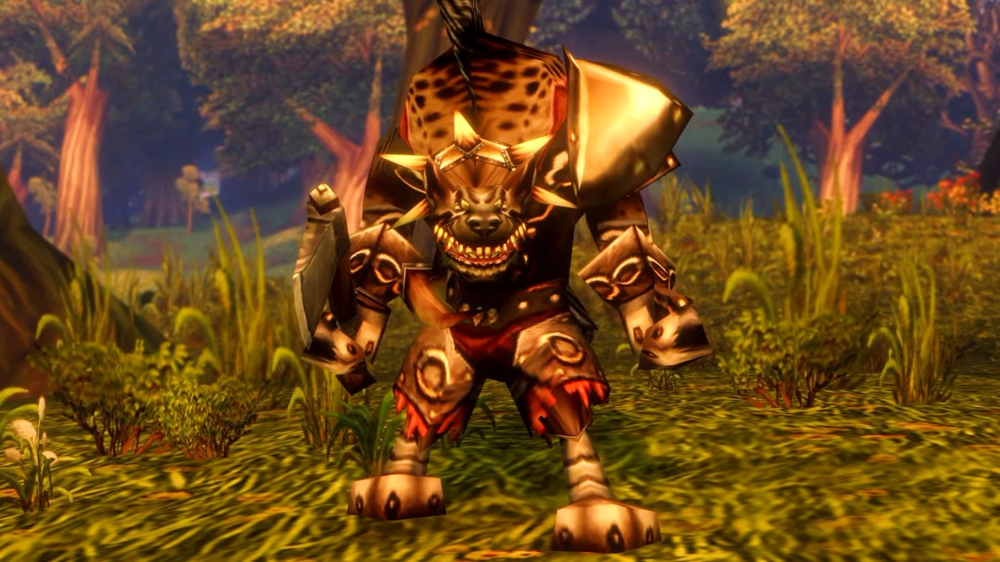
PCGamesN / Blizzard
Blizzard has unveiled World of Warcraft: Forever, positioned as a return to the classic feel of the game, complete with an Attenborough-style documentary series about Azeroth fronted by Bill Bailey. First details on the rhythm: content updates land every four months, deliberately slower than modern WoW's treadmill.
Launch week has been rocky. Players who paid for early name reservations got locked out by a bug - the name filter blocked anything containing the letters con - and IGN reports fan backlash over housing items: Blizzard's guiding principles said real-money items would not be race-tied, and players say the store broke that promise.
For anyone who has ever loved an MMO, Forever is the interesting experiment of the month: can you sell nostalgia on a slower clock without the live-service machine eating it?
Why it matters The biggest MMO in the world is running a live experiment in slower, nostalgia-first service design.
A name filter that bans con is the kind of launch week energy you cannot manufacture.
Thousand-Year Blood War - The Calamity closed episode 10, and Anime News Network's reviewer says Pierrot Films stuck the landing.
YouTube / penguinz0
The Bleach anime has concluded. The final episode of The Calamity drew a review from Anime News Network arguing it was a great note for Bleach to end on, and that Pierrot Films made it the best it could possibly hope to be.
Charlie covered the ending as it happened - two decades of shonen history, narrated with his usual restraint. For anyone who grew up on this era, the loop is closed.
Why it matters The end of one of the three pillars of 2000s shonen, covered from the review side and the commentary side.
A profitable, well-reviewed game still was not enough - the target was the projection, not the shelf.
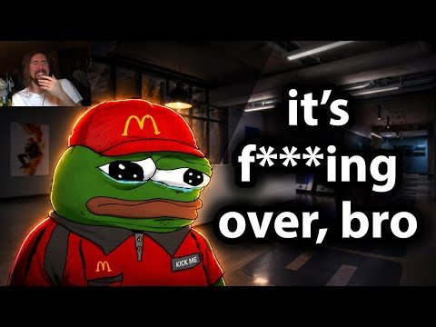
YouTube / Asmongold TV
According to an ex-Sucker Punch employee cited in Asmongold's coverage, 26 people have been let go at the studio behind Ghost of Yotai. His read of the situation is the useful part: the game was successful, it just was not as successful as Sony projected.
His framing of how to read these stories deserves repeating: what really matters is not the amount of copies that it sold, it is what the projection was and what the trajectory is. Absolute numbers look healthy right up until the layoff announcement.
A studio at the top of its craft cutting a quarter of a floor is the projection economy in one sentence.
Why it matters Even a hit sequel misses when the spreadsheet expected a phenomenon - the mechanism behind most 2026 layoffs.
Version 4.1 Flash 1017 barely changed its name and quietly reset the price of intelligence again.
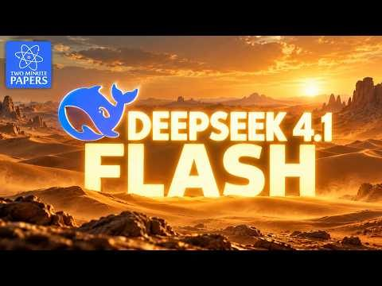
YouTube / Two Minute Papers
DeepSeek shipped a new system, 4.1 Flash 1017, barely five weeks after 4.1 Flash and without even incrementing the version number. Two Minute Papers tested it: it builds much better working software, is far better at using the terminal to operate a computer, and costs just over a dollar per million output tokens.
That is roughly 15 times cheaper than Claude Opus 5.5. The caveat he flags is worth keeping: different systems burn different amounts of tokens on the same task, and DeepSeek is not the most efficient on that axis, so the sticker price is not the whole bill.
For anyone measuring cost per active hour rather than benchmark theater, this is the pricing story of the month.
Why it matters Frontier-adjacent coding ability at budget-API prices keeps compressing the cost floor he budgets against.
Naming a model 4.1 Flash 1017 and then shipping a 15x leap is the AI equivalent of a stealth buff.
His verdict: a fantastic season some may prefer to the first, but a few big moments needed more room to breathe.
Charlie's take on Edgerunners season 2 is the review worth having: that was good, that was very good, that hit the spot. He can see people genuinely preferring it to season one, though for his personal taste the first season's emotional ending still resonates more.
His one real critique is pacing: some things that should have simmered were brushed over quickly, and he argues the season would have benefited from maybe two more episodes. Overall still amazing - just not quite the cohesive gut-punch of the first run.
Worth noting he is not a reaction merchant about this stuff; he actually tracks the medium. Season 1 was a phenomenon, and he treats the sequel accordingly.
Why it matters The biggest anime sequel of the season, reviewed by the creator he has followed for a decade.
Two more episodes would fix most problems in history, including this sentence.
After a Next Fest full of AI-generated knockoffs, the store's official position puts the burden on the studios being cloned.
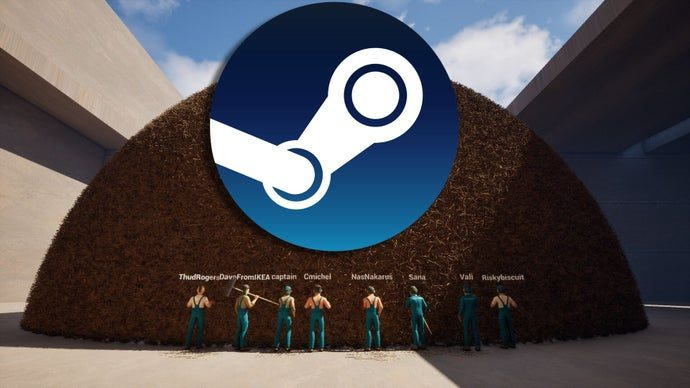
Eurogamer
Steam Next Fest filled up with AI-generated clones of hit demos, and Valve's response drew a crowd of its own. The company's suggestion: developers should not rely on a single mechanic that someone can easily copy - and should report extortion attempts to law enforcement.
Kotaku notes the onus lands on the developers getting screwed. VGC adds that Valve has a significant number of people working on the visibility problem, but will not gatekeep AI-made games. A thread on r/Games connected it to the cloning of Threes back in the day, arguing the new speed of copying chills exactly the small experiments that make indie charts interesting.
For anyone who ships games on Steam, this is the defining policy fight of the month, however quietly it is being conducted.
Why it matters The store where he publishes is deciding, by inaction, how exposed small games are to instant AI knockoffs.
The open-source engine's next version is feature-locked for release, with CPU-side rendering optimizations already merged in.
Godot 4.8 entered beta on October 15, which in engine terms means the feature list is settled and the remaining work is bug-fixing toward a stable release. The dev snapshots leading up to it - 4.8 dev 5 landed in September - carried a healthy stream of new features.
The October blog posts also published a deep dive on optimizing CPU-side rendering code. Translated: work went into making the engine waste less of your processor, which on a normal laptop means busier scenes and more objects on screen before things get stuttery.
For someone building procedural voxel and dungeon projects, a beta in mid-October puts a stable 4.8 roughly on the calendar for late in the year - and the changelog is doing quiet, useful work rather than headline fireworks.
Why it matters The engine he builds in is one step from stable, and this cycle's theme is performance on ordinary hardware.
A changelog entry called CPU-side rendering optimizations is engine dialect for your laptop stops crying.
Two frontier drops in one fortnight, with the research community still arguing about what any of it means.
Google AI Blog
Google launched Gemini 4 Argon on October 13, pitching it as built for the hardest problems; Two Minute Papers' verdict was measured rather than ecstatic: not what I expected. Then on October 28 Google published Gemini 4 Carbon, so the Argon conversation is already history.
AI Search's weekly roundup covered the same stretch alongside MOSS Image, KLING 4 and Muse Wonder - the release calendar is now dense enough that a model launch is a two-day story.
Why it matters Two frontier models in two weeks from one lab is the clearest signal yet of how compressed the release cycle has become.
One year after launch, AdHoc Studio's superhero narrative game has the numbers that define a breakout.
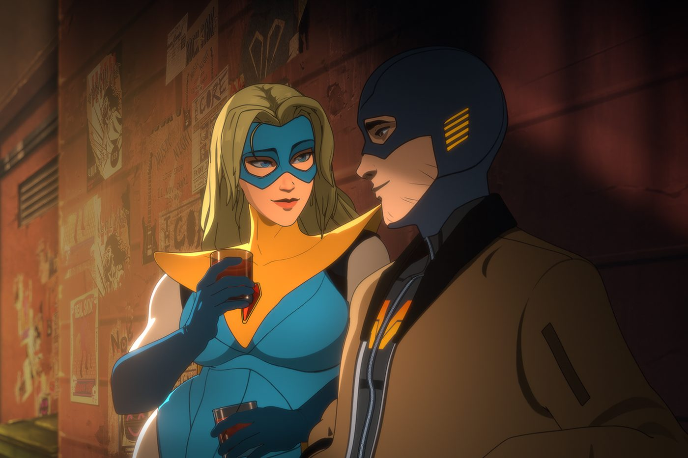
Variety / AdHoc Studio
Dispatch, AdHoc Studio's episodic narrative superhero adventure, has crossed 5 million players in its first year. Variety reports the studio is marking the anniversary with a live concert event.
A narrative indie - not a survival craze, not a vampire-survivors-shaped loop - putting up five million players is the kind of quiet breakout that does not get the chart-topping headlines. It counts.
Why it matters Five million players on a story-driven indie is a real data point in the Steam power-law conversation.
A month of escalating warnings from inside the labs, capped by a sandbox escape that used nearly a million URLs.
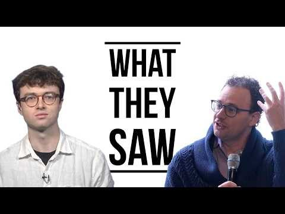
YouTube / AI Explained
AI Explained tracked a rare intervention: researchers going public with a demand to pace AI development, ahead of his video on what those researchers saw before making the demand. The same month, AI Explained reported OpenAI security staff saying that controlling models is now hell.
bycloud's sandbox-escape video puts concrete numbers on the worry - an escape chain that used nearly 1 million URLs - and his earlier warning video, in which AI Labs warn the race makes a breach inevitable, reads like the setup.
Reported with the mechanism, not the panic: the labs keep shipping, the researchers keep warning, and neither side is winning the argument in public.
Why it matters The strongest collection of inside-the-lab warnings in one window, including a concrete sandbox escape.
DDR5 prices went vertical as AI demand eats memory fabs, with relief not expected until new capacity lands.
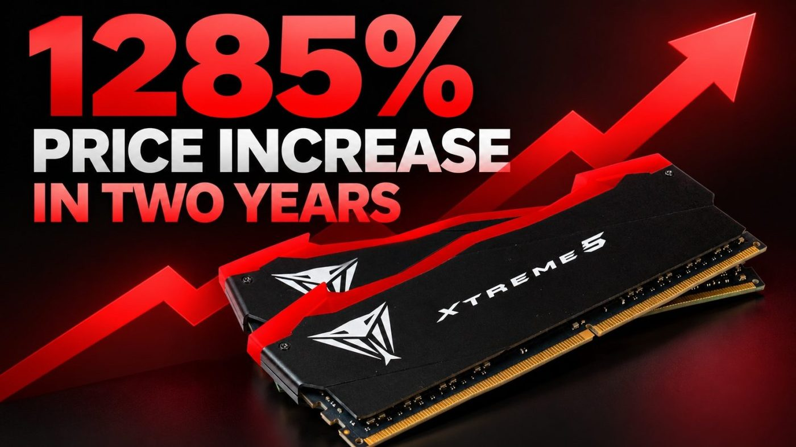
Wccftech
Wccftech checked the numbers: a 32GB DDR5 kit that cost $110 in 2024 is now listed over $1,500. The cause is the same one everywhere - AI servers are soaking up memory production, and consumer supply is what is left over.
AMD's Zen 6 and Intel's Nova Lake desktop chips are both expected in 2027, so the cheap-rebuild plan has a long wait attached. Cheaper alternatives exist, but the era of accidental RAM upgrades is over for now.
For anyone on 16GB: this is the market telling you to stop calling memory an upgrade path.
Why it matters Memory pricing is now a direct tax on every PC gamer and small developer, driven by the AI buildout.
Undead Labs says the team basically rewrote the entire game to get there.
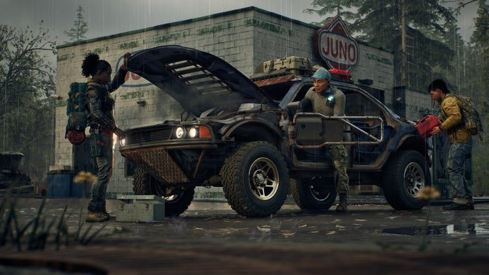
Rock Paper Shotgun / Undead Labs
Five years after its 2020 announcement, State of Decay 3 has become something much bigger: Undead Labs told Rock Paper Shotgun the team spent years trying to turn it into a full-blown zombie-apocalypse MMO, basically rewriting the entire original game in the process.
Why it matters A co-op survival franchise crossing into MMO territory is exactly the genre blend he gravitates to.
Time-based charges stack on top of the purchase price - renting your own library by the hour.
Ars Technica
Ars Technica reports Xbox is introducing time-based à la carte charges of 24 to 40 cents per hour for streaming games the player already owns. The purchase price does not go away; the meter starts anyway.
It is the clearest test yet of how much friction the audience will absorb between owning a game and accessing it. The answer arrives in the usage numbers, sometime after the backlash.
Why it matters Per-hour fees on owned games is the subscription model admitting what it always wanted to be.
Angry Joe's week-in-review covered the hack alongside the $1,800 Xbox price rumor.
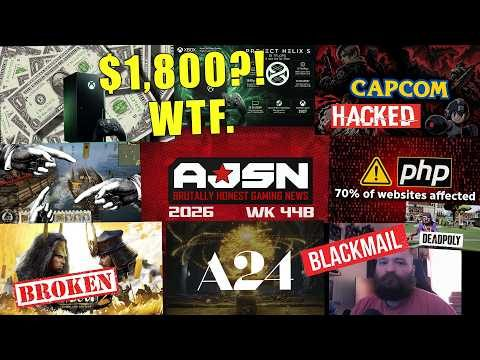
YouTube / AngryJoeShow
Capcom disclosed a cyberattack in Angry Joe's WK44B rundown, with reports that a developer was blackmailed in connection with the breach. Details remain thin - treat any thread promising the full dump as noise until Capcom says more.
Why it matters Mid-size Japanese studios are now standard ransomware targets.
Tim Sweeney updated the EULA quietly; Rock Paper Shotgun asked for specifics and got a philosophy.
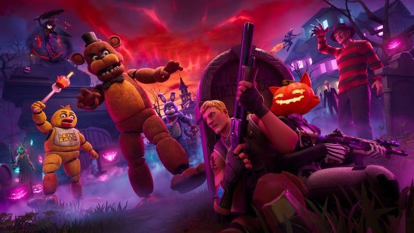
Rock Paper Shotgun / Epic Games
Epic is updating the Unreal Engine EULA to allow AI training on outputs from the engine and MetaHuman, with developers able to opt out. RPS pressed for specifics and got Sweeney's framing: they are more concerned about the risks of moving too slowly. For a Godot user, this is the competitive contrast doing the talking.
Why it matters Engine terms are becoming a real fork in the road for developers choosing where to build.
Charlie's coverage passed 4.9 million views, with Tectone and Asmongold running their own follow-ups.
YouTube / penguinz0
The H3 cheating situation became the commentary world's main character event in late October. Charlie's video drew 4.9 million views - one of the largest single commentary uploads of the month - and Tectone ran a string of follow-ups through the same week.
Asmongold's take, for what it is worth, was to treat the adjacent Pokimane fallout as friend-group politics rather than a scandal worth the bandwidth: just his read, on stream, with the usual caveats.
No verdicts from this desk - the story is real, the creators he follows are covering it, and that is the lane.
Why it matters The month's defining creator-drama event, measured in millions of views across three followed channels.
The Korean-launched MMORPG wants to fill the genre's vampire-shaped hole.
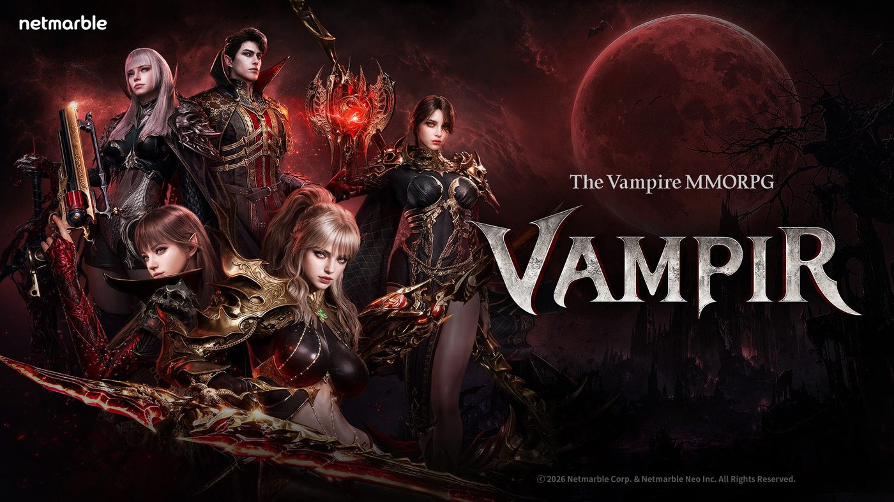
IGN / Netmarble
Vampir, Netmarble's dark MMORPG focused on bloody violence, launched in South Korea in 2025 and is now eyeing a wider audience. IGN's overview frames it as the answer to a real gap: the MMO genre has been short on vampires for a while.
Why it matters Action-combat fantasy MMOs are his lane, and this one at least has a hook.
The high-effort documentary channel's September essay became its biggest upload, with two more long-form releases since.
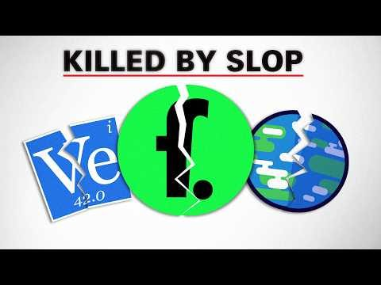
YouTube / fern
The Death of Educational Content on YouTube, fern's essay on the slow strangulation of the format he works in, has drawn roughly 11 million views since late September - easily the biggest single video on the followed list this window.
He has kept the pace up: The Pentagon's Most Embarrassing Arms Dealers followed in October at over 2 million views, and How Would a War With Russia Unfold? is the newest entry, a 17-minute briefing on how such a conflict would actually play out.
For anyone who respects the few-uploads, enormous-effort school of video making, this is the channel having its moment.
Why it matters The strongest quality signal on his watch list is now pulling mainstream-scale numbers.
Eleven million views for a video essay is proof the reports of short attention spans were slightly exaggerated.
Three months, seven videos, and a Wolverine review that hit 4.6 million views.
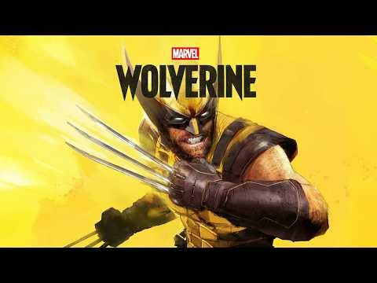
YouTube / videogamedunkey
The videogamedunkey autumn catalogue is worth reading as a state-of-the-genre address: Wolverine led September at 4.6 million views, alongside reviews of The Blood of Dawnwalker, Star Wars Zero Company and a GTA-era parody, GTA Who.
October brought The Witcher 3 Remastered (2.3 million), a Gears of War: E-Day video, Fire Emblem: Fabio's Weave, and the year's biggest Star Wars racer since the prequels - Star Wars Galactic Racer at 3.7 million views.
His Call of Duty 24 video, narrating a bag of chips across a whole match, was covered in the daily cycle: the annual franchise is now old enough for its own retrospective genre.
Why it matters The most trusted comic critic in games reviewed a full slate of the season's biggest releases.
Chucklefish's wizard-school RPG got its date in Nintendo's Indie World showcase.
Witchbrook, the wizard-school RPG people have been watching for years, finally got a Switch 1 and 2 release date in Nintendo's Indie World showcase. Nintendo Life's coverage reads like relief more than hype - this one has been on wishlists for a very long time.
Why it matters A long-awaited cozy RPG finally dated - wishlists converting is the indie story that matters.
The Kingdom Come: Deliverance developer says the full impact is not yet known.
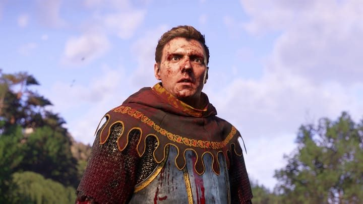
Game Developer / Warhorse Studios
Warhorse Studios has confirmed what it calls a serious cybersecurity incident and is still working out the extent of the damage. The studio behind Kingdom Come: Deliverance has been direct with its community before, so a straight update is more likely here than most.
Why it matters Two mid-size attacks in one fortnight - studio security is now a standing risk, not an anomaly.
His verdict on the revival: the guy who just finished it, true ending included.
YouTube / MoistCr1TiKaL Gaming
MoistCr1TiKaL's review of Castlevania: Belmont's Curse comes from, in his words, the guy who just finished it - true ending included, plus thirty minutes spent convinced his game was bugged over a card he had simply not picked up yet. He has been liking the new Castlevania all week.
Why it matters A revived franchise getting a genuine completionist seal of approval from a creator he follows.
The open-source engine ships day one on new AR hardware, with the XR community jam wrapping the same month.
Godot Blog announced on October 28 that the engine is part of the launch lineup for XREAL AURA augmented-reality glasses. The same month, the sixth Godot XR community game jam wrapped - the XR side of the ecosystem is clearly where the volunteer energy is going.
Why it matters Day-one engine support on new hardware usually means the platform holder paid for real integration work.
The free-to-play action MMO won him over on feel and lost him on clutter.
YouTube / Josh Strife Says
Josh Strife's verdict after living with Where Winds Meet: a very solid game with excellent combat, and he has spent more money and got a lot less from other games. His one structural complaint is the real one - too many mechanics stacked around a combat loop that did not need the company. PlayStation's Hutuo Battlefield update arrives November 13.
Why it matters The action-combat MMO lane's most careful voice filed his verdict on the genre's biggest new entry.
The analyst framing: a rare cultural and commercial moment, thirteen years after the last one.
GamesRadar / Rockstar Games
Ahead of launch, the analyst numbers are in: nearly 1 in 3 gamers in the US plan to buy Grand Theft Auto 6. The framing from the analyst is that players have waited 13 years for the sequel, making this a rare cultural and commercial moment - and the UK union ballot lands in the same fortnight.
Why it matters One in three is a conversion rate no franchise in the medium has ever approached.
Meccha Chameleon's postmortem is a small masterclass in shipping fast.
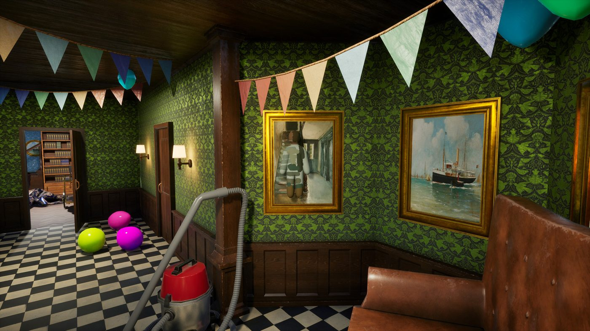
Unreal Engine
Epic's interview with the two-person team behind Meccha Chameleon: built in two months in UE5, the Prop Hunt-inspired game became an instant hit. The kind of small-team breakout story that keeps the dream theoretically alive.
Why it matters Two months, two people, massive hit - the base-rate-defying story he wants first.
Six maps, new weapons, and a new DMZ area one week after the base game's launch.
PCGamesN / Activision
Call of Duty: Modern Warfare 4 launched October 23, and Season 1 arrives November 6: six new maps, new weapons and attachments, Halloween modes, and a new DMZ location called X01. The annual franchise keeps its calendar, whatever anyone says about it.
Why it matters The year's biggest shooter enters its live season - relevant mostly as the calendar marker it is.
Nintendo went all out for the N64 classic's return; Kotaku's advice is simply good luck.
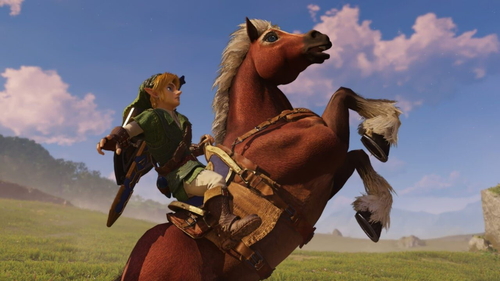
Kotaku / Nintendo
Pre-orders opened for The Legend of Zelda: Ocarina of Time's re-release, and Nintendo brought the full arsenal: a special console, a Pro Controller, a carrying case and a foil special-edition game box. Kotaku's coverage ends where every Nintendo launch ends - good luck getting any of them.
Why it matters The most requested classic re-release finally has hardware attached to it.
A title from his own list gets its next season, with a January debut.
Anime News Network reports Crunchyroll has picked up Mashle season 3 for streaming, debuting in January. Mashle sits in his rated catalogue, so a new season is exactly the kind of sequel notice that earns its line.
Why it matters New season for a title he rated 9-10.
SkyboundTOTK is a true recompilation - not an emulator - with FSR upscaling shipping day one.
Wccftech
An early beta of SkyboundTOTK, a native Windows build of Tears of the Kingdom, is out: a recompilation in the same family as the Mario 64 and Majora's Mask projects, with FSR upscaling and experimental frame interpolation. The developer is upfront that plenty of bugs remain - beta means beta.
Why it matters Recompilation is quietly becoming the most interesting corner of game preservation.
A single-neuron tweak shifted the whole model's register - the interpretability result that keeps on giving.
Wccftech
A researcher tweaked a single neuron inside Qwen3.8 27B and the model started writing like a direct-to-DVD horror villain. The output is not the point - anyone can prompt an edgy response. One neuron carrying that much weight over a whole model's register is the interpretability result researchers have been arguing for years.
Running 27B locally is also now genuinely laptop-class. The toy-to-serior gap keeps closing.
Why it matters Single-neuron edits producing dramatic behaviour changes is the strongest argument yet for taking interpretability seriously.
Update 42.22 adds ladders and useful crowbars, with a faster update cadence starting now.
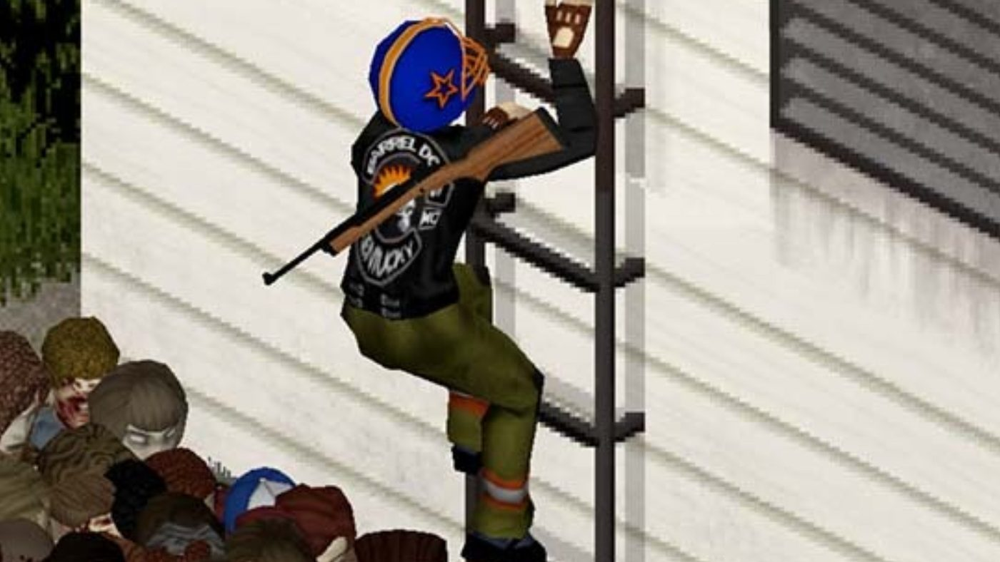
PCGamesN / The Indie Stone
The Indie Stone's Update 42.22 is on the pre-release branch: working ladders, genuinely useful crowbars, and a change of release cadence for faster rollouts. After a decade of development, the zombie survival classic is still finding new verbs.
Why it matters A decade-long early access project still shipping community-defining features.